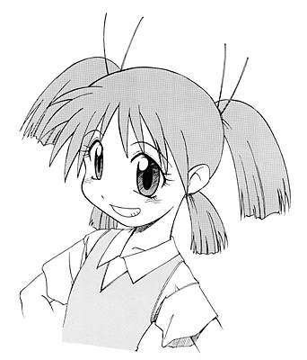

An illustration for the inside flap of the obi strip for the second printing of "Azumanga".
I had written "Serialization Has Begun!", or something like that on the home page.
---------------------------------------------------------------------